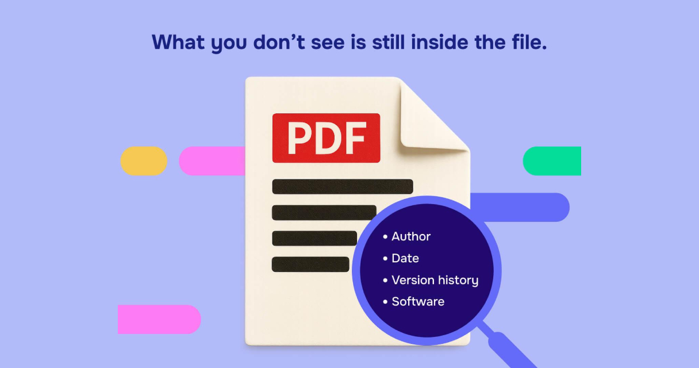

Online PDF tools make it easy to compress documents, convert files, split pages, and combine reports without installing software. But before uploading a file, it is worth asking a simple question: what information does this PDF contain, and where will it go when I use the tool?
A document may include more than the text visible on the page. It can contain personal details, financial records, comments, embedded information, or metadata that you did not intend to share. The service you choose also matters: some PDF operations run inside your browser, while others send files to a remote server for processing. These methods have different privacy considerations.
This checklist will help you assess a PDF before using an online tool, identify warning signs in a provider’s privacy policy, and choose a workflow that fits the sensitivity of your document.
Quick answer: Is it safe to upload a PDF online?
It depends on the document, the tool, and how the file is processed.
A routine, non-confidential document may be suitable for an online converter with a clear privacy policy. A passport scan, bank statement, medical record, signed contract, or document containing customer information deserves more caution.
Before uploading, check these five things:
- Does the PDF contain confidential or personally identifiable information?
- Does the tool process the file locally or upload it to a server?
- Does the provider explain how long files are retained?
- Does the service describe how files are protected and whether third parties process them?
- Can you use an approved offline or local-processing alternative instead?
No single checklist guarantees privacy. The goal is to understand the risks before sharing a document.
1. Check what is actually inside your PDF
Start by reviewing the document itself. Do not assume a PDF is harmless simply because it looks like an ordinary form or report.
Look for information such as:
- Full names, home addresses, phone numbers, and email addresses
- Passport numbers, national identification numbers, or other identity details
- Bank account details, payment information, or salary records
- Medical records, prescriptions, or insurance information
- Signatures, initials, stamps, and confidential contract terms
- Customer lists, internal business reports, or unpublished financial data
- Comments, annotations, form fields, and attachments
Practical example: A résumé may seem safe to convert, but it could include a personal phone number, home address, and references’ contact information. A business report may also contain internal notes that are not intended for public distribution.
Pre-upload check: Ask yourself: Would I be comfortable sharing this information with the service provider under its published privacy terms? If the answer is no, do not upload the original file until you have selected an appropriate, approved method of processing.
2. Understand local processing versus server uploads
One of the most important privacy checks is finding out where the actual PDF processing happens.
Local or browser-based processing
The browser reads the file and performs the operation on your device. If the specific tool truly works locally, the document does not need to be uploaded to the tool’s server for that operation. However, you should still check the page’s scripts, connected services, and privacy disclosures.
Server-based processing
The browser sends the document to a remote service, which performs the requested task and returns a result. You need to understand the provider’s security practices, retention period, access controls, and any third-party processing involved.
Both methods can be implemented responsibly, but they do not have the same data flow. Some websites use different processing methods for different tools, so a general statement about a website may not describe every operation.
How can you check the processing method?
- Open the privacy policy and look for terms such as browser-based processing, client-side, server-side, temporary storage, and uploaded files.
- Find the explanation for the exact tool you intend to use, not just the website’s homepage.
- Check whether the provider identifies exceptions, such as OCR, AI features, or conversions that require a server.
- If you have technical experience, use your browser’s developer tools and Network panel with a non-sensitive test PDF to inspect requests made during processing.
- If the policy is vague or you cannot verify a claim, treat the processing method as unconfirmed.
A website loading files from a server is not, by itself, proof that your PDF was uploaded. The important question is whether the document or its contents are transmitted during the specific operation.
3. Read the file-retention and deletion policy
If a tool uploads your PDF, find out what happens after processing finishes.
Look for clear answers to these questions:
- Are the original file and the generated result stored on a server?
- How long is each file kept?
- Are files deleted automatically, manually, or only after a stated period?
- Does the provider explain whether backups or logs may contain file-related information?
- Can you request deletion, and how do you do so?
- Does the service keep files if conversion fails or you close the browser?
Do not assume that closing a browser tab deletes a server-side file. Similarly, a “delete” button is not proof that all copies, backups, or logs are immediately erased.
What does a useful retention policy look like?
A useful policy explains the difference between the uploaded original, the processed output, temporary working files, and any other relevant copies. It states a specific retention period or deletion trigger and explains any exceptions.
Be cautious when a policy only says that files are “secure” or “automatically deleted” without explaining the process. Those phrases alone do not tell you how long the file exists or what happens to it.
4. Check the privacy policy for third-party access
A PDF tool may rely on hosting providers, cloud infrastructure, external conversion services, analytics systems, or other vendors. Some services may also send document text to AI providers when users request summarization, extraction, or other AI-powered actions. These arrangements vary by provider and feature.
Before uploading a sensitive document, check whether the provider explains:
- Which categories of service providers may process data
- Whether files or extracted text can be sent to external services
- Whether content is used for purposes beyond delivering the requested operation
- Whether the policy addresses AI processing and model training, where relevant
- How the provider handles legal requests and security incidents
A privacy policy does not need to use identical wording to another service’s policy. What matters is whether you can understand the data flow and make an informed decision.
Important: Do not assume that “no account required” means “no data collected.” A website can process a file without an account and still collect technical information about requests or site usage.
5. Review PDF metadata and hidden information
The visible pages are only part of a PDF. Depending on how the document was created, it may contain metadata or other information that you do not see when reading it.
Potential examples include:
- Document title and author
- Creation or modification dates
- Software used to create the file
- Comments and annotations
- Form data and embedded attachments
- Hidden content or previous revisions, depending on the PDF’s structure
Adobe’s documentation distinguishes redaction, which removes selected visible content, from sanitization, which targets hidden data such as metadata and embedded content. These are different tasks, and both may matter before sharing a confidential document.

How to reduce metadata exposure
- Open the PDF in a trusted PDF editor or viewer that exposes document properties.
- Review the document’s properties, including title and author fields, where available.
- Inspect comments, attachments, and form fields if the document may contain them.
- Use a reputable sanitization feature if you need to remove hidden information.
- Save a separate copy and review the resulting document before sharing it.
Metadata removal is not a substitute for reviewing the document’s actual contents. Nor does it automatically remove every type of hidden data from every PDF.
6. Redact sensitive information correctly
Drawing a black rectangle over text is not necessarily secure redaction.
In some editing workflows, a shape placed over text may simply cover it visually while leaving the original text underneath. Someone with the right tools could potentially select, copy, or otherwise recover that content.
Proper PDF redaction removes the selected content rather than merely hiding it. After applying redaction, save the document and verify that the removed information is no longer searchable or extractable. Adobe also notes that sanitization may be needed to address hidden data separately.
Redaction checklist
- Use a feature specifically designed for permanent redaction.
- Apply the redaction and save the resulting PDF.
- Search for the redacted words using the document’s search function.
- Try selecting and copying nearby text to check the result.
- Review the pages visually for names, numbers, signatures, or other overlooked details.
- Inspect metadata, comments, attachments, and form fields separately.
These checks help identify common mistakes, but they are not a complete forensic guarantee. For legal, regulated, or highly confidential documents, follow your organization’s approved redaction process.
7. Choose the processing method based on document sensitivity
Use the following as a practical starting point, not as a universal legal or security classification.
| Document type | Sensible starting point |
|---|---|
| Public brochure or already-public document | An online tool may be appropriate after checking its basic privacy terms. |
| General school assignment or non-confidential report | Review the file contents and tool’s processing and retention policy. |
| Résumé with contact information | Prefer a trusted tool and avoid uploading unnecessary personal details. |
| Bank statement, identity document, or medical record | Prefer approved local/offline processing where practical; follow applicable policies and obligations. |
| Confidential client files, contracts, or internal business records | Use an organization-approved tool and confirm the relevant security and data-handling requirements. |
If a document contains highly sensitive information, the best option may be not to upload it to a third-party service at all. If your employer, client, school, or regulator specifies an approved workflow, follow that requirement.
8. Use this complete PDF privacy checklist before uploading
PDF pre-upload checklist
- Review the document: Check visible pages for personal or confidential information. Review comments, annotations, form fields, and attachments where relevant. Confirm that you are allowed to share and process this document.
- Verify the tool: Find the privacy policy and check the exact tool you plan to use. Know whether the operation is local, server-based, or not clearly specified. Check whether external services or AI features may receive the file or extracted text.
- Check retention and protection: Understand how long uploaded files and results may be retained. Check the deletion policy and any relevant exceptions. Review the provider’s explanation of security measures and third-party access.
- Prepare the PDF: Review document properties and metadata where appropriate. Use proper redaction rather than simply covering text with shapes. Save and review the final output for missing or exposed information.
- Make the decision: Choose a processing method suitable for the document’s sensitivity. Avoid uploading the original if the service’s data handling remains unclear. Delete unnecessary local copies and follow your organization’s file-handling rules.
This checklist is a practical reminder, not a certification that a document or service is secure.
9. What this means when using QuickToolsPK
QuickToolsPK provides PDF-related utilities, so privacy guidance should be part of the user experience, not just a blog topic. However, the exact processing architecture for each QuickToolsPK tool needs to be confirmed before making claims about whether files leave the browser, how long they are retained, or whether third parties can access them.
Before publishing any privacy promise on QuickToolsPK, verify the following for each relevant PDF tool:
- Processing location: Does the operation run entirely in the browser, or does it send the file to a server?
- Network behavior: Does the operation transmit the PDF or extracted document content to another endpoint?
- Temporary storage: If files are uploaded, where are they held, and when are originals and outputs deleted?
- Logging and analytics: Could filenames, file contents, extracted text, or file-related information enter logs or analytics?
- Third-party services: Are any external APIs, cloud services, OCR systems, or AI providers involved?
- Failure behavior: What happens to temporary files when a conversion fails or the user leaves the page?
- User-facing disclosure: Does the privacy policy accurately explain the behavior of the live implementation?
A browser-only tool and a server-processing tool may need different disclosures. Do not use a blanket statement such as “your files never leave your device” unless the claim has been technically verified for every tool covered by that statement.
Related QuickToolsPK tools
Once you have verified the current tool URLs and behavior, link readers to the relevant utilities:
- Split PDF: For separating selected pages from a document.
- Merge PDF: For combining documents into one PDF.
- Rotate PDF: For correcting page orientation.
- PDF to JPG: For converting PDF pages into images.
- JPG to PDF Converter: For turning images into a PDF.
These tools are task-specific options, not privacy guarantees. Readers should apply the same checklist before uploading a file to any tool that sends it to a server.
Conclusion
Checking a PDF’s privacy before uploading takes only a few minutes, but it can help prevent accidental disclosure. Review the visible content, consider metadata and hidden information, verify the processing method, and read the provider’s retention policy. Use proper redaction when sensitive information must be removed, and prefer an approved local or offline workflow when the document’s sensitivity warrants it.
The safest decision is an informed one: know what your document contains, understand how the tool handles it, and avoid uploading confidential files when you cannot verify that the workflow is appropriate.